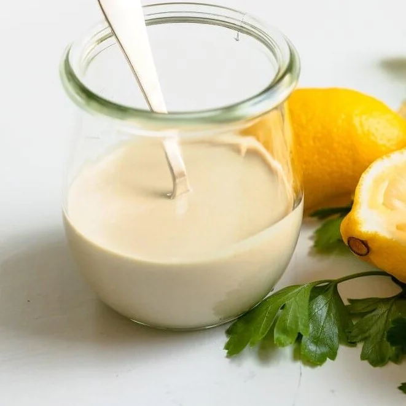

Tahini Sauce Recipe

Dish description
Tahini Sauce pairs exceptionally well with a wide variety of middle eastern dishes. It's pretty simple to make and
goes a long way towards adding that special something to your dishes. This dish is much more of an art than a formula, so some
ingredients do not have amounts. Instead, just add some, taste, and adjust.
Ingredients
- Garlic cloves, pressed or minced
- Tahini (about 1/2 cup)
- Lemon juice
- Salt
- Pinch of ground cumin
- About 6 tbsp of water (relative to amount of tahini used)
Recipe Steps
- In a food processor, mix all ingredients
- Blend until mixed, and taste
- Add Lemon juice, salt, or garlic to taste. For best results add ingredients while pulsing or running the processor.
- Add more water to turn into more of a drizzle, or keep dehydrated for a thicker pour
- Pour onto your dish of choice and enjoy!
Back to Main Page